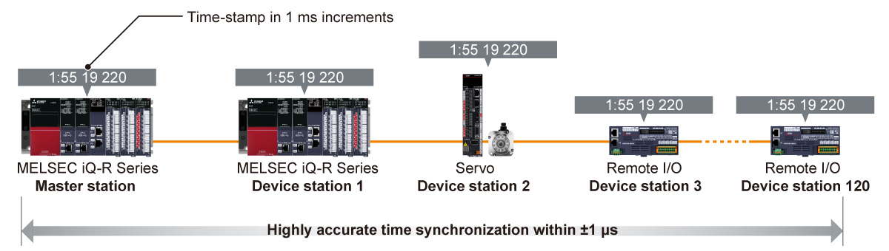

Controllers MELSEC iQ-R Series Fitur Produk -Jaringan-

Modul induk/lokal CC-Link IE TSN
Komunikasi kontrol yang memerlukan kinerja waktu nyata dan komunikasi TCP/IP dapat dicampur, memaksimalkan kinerja dan fungsionalitas CC-Link IE TSN.

Kontrol deterministik bahkan saat dicampur dengan komunikasi TCP/IP
- Komunikasi TCP/IP campuran
- Sistem IIoT
- Kinerja deterministik komunikasi siklik dipertahankan bahkan saat dicampur dengan data informasi yang lebih lambat (non-waktu nyata)
- Perangkat komunikasi TCP/IP dapat digunakan tanpa memengaruhi kontrol keseluruhan
Beberapa perangkat tidak dapat dihubungkan ke CC-Link IE TSN tergantung pada konfigurasi sistem.
- *1.Switch Ethernet terkelola Kelas B yang mendukung CC-Link IE TSN yang direkomendasikan oleh CC-Link Partner Association
Analisis penyebab kesalahan dengan sinkronisasi waktu yang sangat tepat
- Analisis deret waktu
- Komunikasi yang disinkronkan
- Akurasi sinkronisasi waktu yang sangat akurat dalam ±1 µs dan setiap stasiun yang terhubung ke jaringan berbagi informasi cap waktu dalam kelipatan 1 ms meningkatkan diagnostik dan pemecahan masalah sistem dengan memungkinkan analisis berurutan stasiun dalam jaringan
- Riwayat kesalahan ditampilkan secara berurutan berdasarkan data cap waktu, memungkinkan analisis akurat penyebab kesalahan menggunakan waktu sebenarnya saat peristiwa terjadi

Mengurangi waktu pengoperasian secara keseluruhan dengan pemindaian tautan berkecepatan tinggi
- Min. siklus komunikasi 31,25 µs*2
- Pemrosesan kecepatan tinggi 16 x*3 lebih cepat
- Titik tautan 2 x*4
- Protokol canggih yang dibangun ke dalam CC-Link IE TSN dilengkapi dengan fungsionalitas metode pembagian waktu yang memungkinkan komunikasi simultan antara stasiun jaringan
- Waktu siklus komunikasi cepat hanya 31,25 µs*2 dan pemrosesan kecepatan tinggi sekitar 16 kali lebih cepat daripada kinerja jaringan saat ini tercapai, menghasilkan kontrol gerakan berkecepatan tinggi dan akurasi tinggi
- Produktivitas ditingkatkan secara bersamaan berkat untuk peningkatan substansial dalam kinerja kontrol, yang mengurangi waktu operasi secara keseluruhan dan memungkinkan komunikasi data berkecepatan tinggi dan berkapasitas besar
- *2.Nilai ini tercapai saat mode operasi cepat modul gerak (RD78GH) digunakan. Untuk detailnya, silakan lihat “Panduan Pengguna Modul Gerak MELSEC iQ-R (Aplikasi) (IB-0300411ENG)”.
- *3.Perbandingan dengan CC-Link IE Field Network Motion
- *4.Perbandingan dengan CC-Link IE Field Network
Spesifikasi modul master/lokal CC-Link IE TSN
| Item | RJ71GN11-T2*5 |
|---|---|
| Compatible network | CC-Link IE TSN |
| Communication speed (bps) | 1G/100M |
| Maximum stations per network*6 | 121 |
| Network topology*7 | Line, star*8, ring |
| Connection cable | Ethernet cable (Category 5e or higher) |
| Max. station-to-station distance (m) | 100 |
| Overall cable distance (m) | Line: 12000 Ring: 12100 Others: depends on the system configuration |
| Maximum link points per network | |
| Remote input (RX), remote output (RY) | 16384 points, 2KB |
| Remote register (RWr, RWw) | 8192 points, 16KB |
| Link relay (LB) | 32768 points, 4 KB For extended points:131072 points, 16 KB |
| Link register (LW) | 16384 points, 32 KB For extended points:524288 points, 1024 KB |
- *5.Untuk pembatasan pada konfigurasi sistem, silakan lihat "Panduan Pengguna MELSEC iQ-R CC-Link IE TSN (Startup) (SH-082127ENG)".
- *6.Termasuk stasiun induk.
- *7.Silakan gunakan sakelar Ethernet terkelola yang mendukung CC-Link IE TSN (kelas B) yang direkomendasikan oleh CC-Link Partner Association untuk modul induk/lokal CC-Link IE TSN (RJ71GN11-T2) dan modul induk/lokal CC-Link IE TSN Plus (RJ71GN11-EIP).
- *8.Topologi garis dan topologi bintang dapat dicampur.
Modul induk/lokal CC-Link IE TSN Plus

Gunakan perangkat jaringan lainnya
- Gunakan perangkat EtherNet/IP™
- Gunakan perangkat EtherNet/IP™ sambil mempertahankan komunikasi CC-Link IE TSN berkecepatan tinggi/berakurasi tinggi
- Kedua jaringan dapat dengan mudah diatur dalam perangkat lunak rekayasa GX Works3
- Komunikasi soket didukung, yang memungkinkan perangkat yang tidak mendukung SLMP melalui Ethernet umum untuk dihubungkan
Spesifikasi modul master/lokal CC-Link IE TSN Plus
| Item | RJ71GN11-EIP | |
|---|---|---|
| Compatible network | CC-Link IE TSN EtherNet/IP™ |
|
| Communication speed (bps) | 1G/100M | |
| Maximum stations per network*9 | 121 | |
| Network topology*10 | Line*11, star*12 | |
| Connection cable | Ethernet cable (Category 5e or higher) | |
| Max. station-to-station distance (m) | 100 | |
| Overall cable distance (m) | Line: 12000 Others: depends on the system configuration |
|
| Maximum link points per network | ||
| Remote input (RX), remote output (RY) | 16384 points, 2KB | |
| Remote register (RWr, RWw) | 8192 points, 16KB | |
| Link relay (LB) | 32768 points, 4 KB For extended points:131072 points, 16 KB |
|
| Link register (LW) | 16384 points, 32 KB For extended points:524288 points, 1024 KB |
|
| EtherNet/IP™ communications | ||
| Data transmission speed (bps) | 1G/100M | |
| Class 1communications | Number of connections |
|
| Communication data size (byte) | 1444 (per connection)*14 | |
| RPI (communication cycle) (ms) | 0.5…60000 (in increments of 0.5 ms) | |
| PPS (communication processing performance)*15 (pps) | 12000 | |
| UCMM communications | Number of connections (number of simultaneous executions) |
|
| Communication data size (byte) |
|
|
| Class 3 communications | Number of connections |
|
| Communication data size (byte) |
|
|
- *9.Termasuk stasiun induk.
- *10.Harap gunakan sakelar Ethernet terkelola yang mendukung CC-Link IE TSN (kelas B) yang direkomendasikan oleh CC-Link Partner Association untuk modul induk/lokal CC-Link IE TSN (RJ71GN11-T2) dan modul induk/lokal CC-Link IE TSN Plus (RJ71GN11-EIP).
- *11.Modul induk/lokal CC-Link IE TSN Plus (RJ71GN11-EIP) hanya dapat dihubungkan di ujung jaringan.
- *12.Topologi garis dan topologi bintang dapat dicampur.
- *13.Jumlah total koneksi untuk komunikasi Kelas 1, komunikasi tag UCMM (fungsi server), dan komunikasi Kelas 3 adalah 256. Oleh karena itu, jumlah setiap koneksi bervariasi tergantung pada jumlah dan ukuran komunikasi yang terpisah.
- *14.Jika perangkat eksternal tidak mendukung Large Forward Open (spesifikasi opsi CIP), ukuran data komunikasi hingga 504 byte.
- *15.PPS: Jumlah bingkai yang dapat diproses per detik
- *16.Jumlah maksimum eksekusi simultan (jumlah koneksi yang dapat diterima secara bersamaan) untuk fungsi server adalah 96 untuk total fungsi server komunikasi UCMM dan Kelas 3.
Modul jarak jauh tipe blok CC-Link IE TSN
Klik di sini untuk detail tentang modul jarak jauh tipe blok CC-Link IE TSN